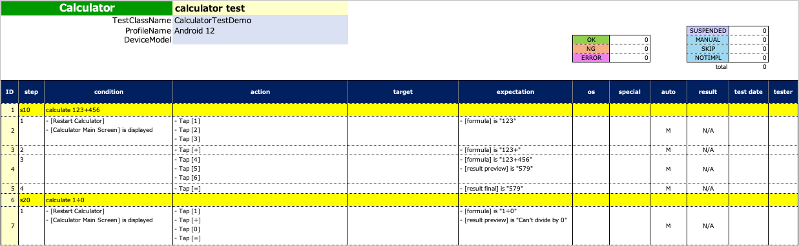
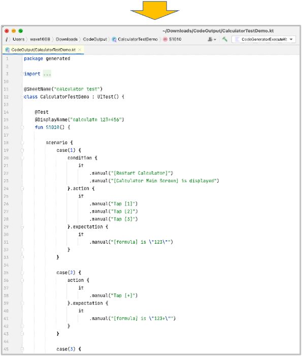
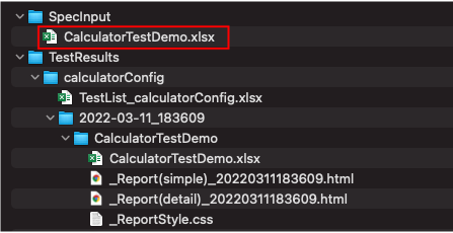
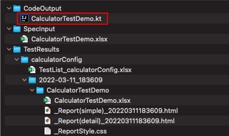

CodeGeneratorExecute
You can generate test code template from Spec-Report format.


Creating function
- Create a class file named
CodeGeneratorExecute. - Create main function as follows.
import shirates.spec.code.model.CodeGenerationExecutor
fun main() {
CodeGenerationExecutor().execute()
}
Running function
- Create
SpecInputdirectory in download directory. - Put test specification file in Spec-Report format into
SpecInputdirectory.
 - Right click
CodeGeneratorExecute.ktand selectrun. - You can see generated test code template in
CodeOutputdirectory.

CalculatorTestDemo.kt (Generated)
package generated
import org.junit.jupiter.api.DisplayName
import org.junit.jupiter.api.Test
import shirates.core.configuration.Testrun
import shirates.core.driver.branchextension.*
import shirates.core.driver.commandextension.*
import shirates.core.driver.function.*
import shirates.core.testcode.*
@SheetName("calculator test")
class CalculatorDemo : UITest() {
@NoLoadRun
@Test
@DisplayName("calculate 123+456")
fun S1010() {
scenario {
case(1) {
condition {
it.macro("[Restart Calculator]")
.screenIs("[Calculator Main Screen]")
}.action {
it.tap("[1]")
.tap("[2]")
.tap("[3]")
}.expectation {
it.select("[formula]").textIs("123")
}
}
case(2) {
action {
it.tap("[+]")
}.expectation {
it.select("[formula]").textIs("123+")
}
}
case(3) {
action {
it.tap("[4]")
.tap("[5]")
.tap("[6]")
}.expectation {
it.select("[formula]").textIs("123+456")
.select("[result preview]").textIs("579")
}
}
case(4) {
action {
it.tap("[=]")
}.expectation {
it.select("[result final]").textIs("579")
}
}
}
}
@NoLoadRun
@Test
@DisplayName("calculate 1÷0")
fun S1020() {
scenario {
case(1) {
condition {
it.macro("[Restart Calculator]")
.screenIs("[Calculator Main Screen]")
}.action {
it.tap("[1]")
.tap("[÷]")
.tap("[0]")
.tap("[=]")
}.expectation {
it.select("[formula]").textIs("1÷0")
.select("[result preview]").textIs("Can't divide by 0")
}
}
}
}
}